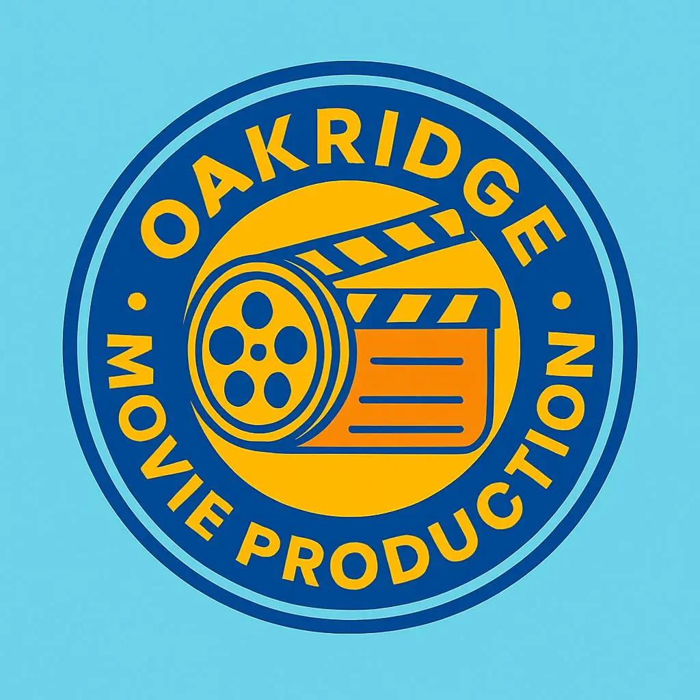

Community Servers
These servers are officially accepted servers within the community. All of these can be found in the community servers channel within the discord.
Oakridge Movie Production
Type: Media, Realism, Roleplay
Discord Server

Want to be in an Oakridge movie/trailer? Want the chance to be the next main character?
Then Oakridge Movie Production is for you! Oakridge Movie Production (OMP) is a group where we create movies about and on Oakridge.
We are also a group that will be organizing RP shift sessions!
So don't hesitate to join us!
There are a lack of servers affilated with Koyot Digital. Feel Free to get yours registered!